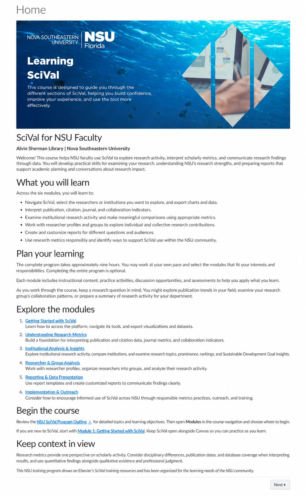
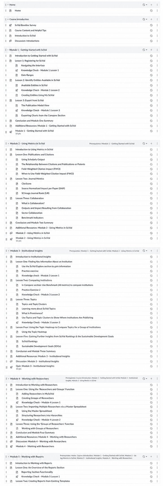

Learning SciVal: Faculty Development in Canvas
Learning SciVal is a self-paced Canvas course designed to help Nova Southeastern University faculty explore research activity, interpret scholarly metrics, and communicate research impact. Its six-module framework covers platform navigation, research metrics, institutional analysis, researcher profiles and groups, reporting, and responsible use of SciVal.
My work focuses on adapting Elsevier’s SciVal training resources for NSU faculty through a revised course outline, customized homepage, university branding, and practical learning goals. The course pairs instructional content with practice activities, discussions, knowledge checks, and quizzes to support application.
The design emphasizes clear navigation, flexible participation, and connections to faculty research needs, including examining collaboration patterns and preparing research summaries. It also encourages learners to interpret metrics in context and alongside professional judgment.




- Canvas LMS
- Course outline and learning objectives
- Module sequencing and prerequisites
- Knowledge checks and quizzes
- Faculty audience
- Adapting vendor content